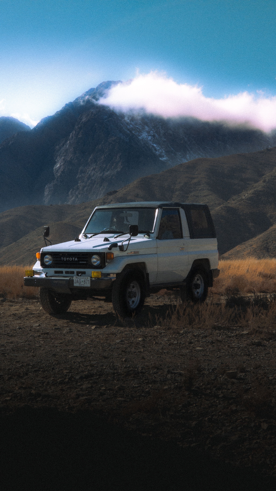
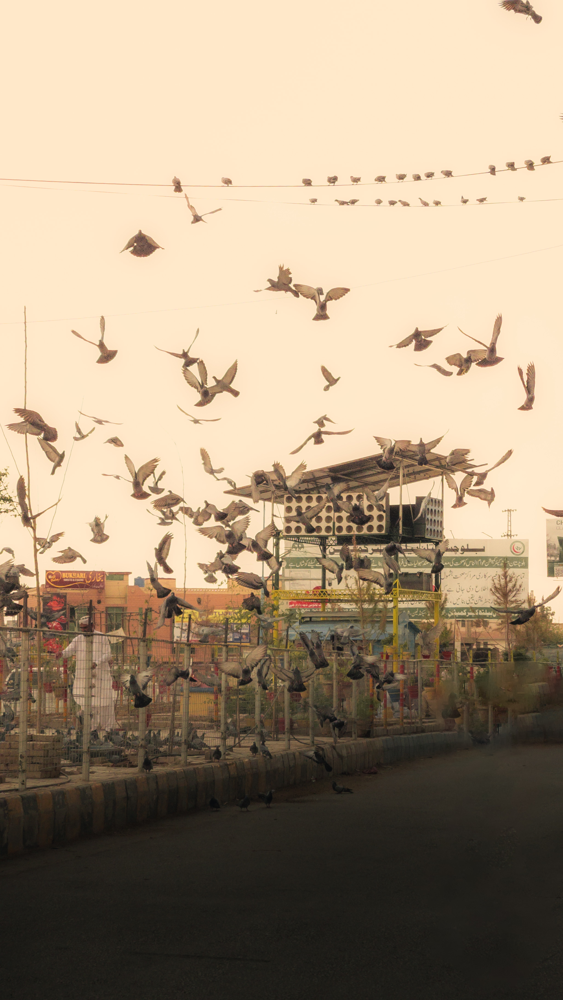
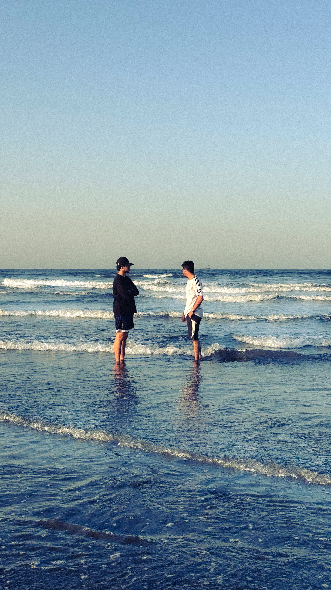
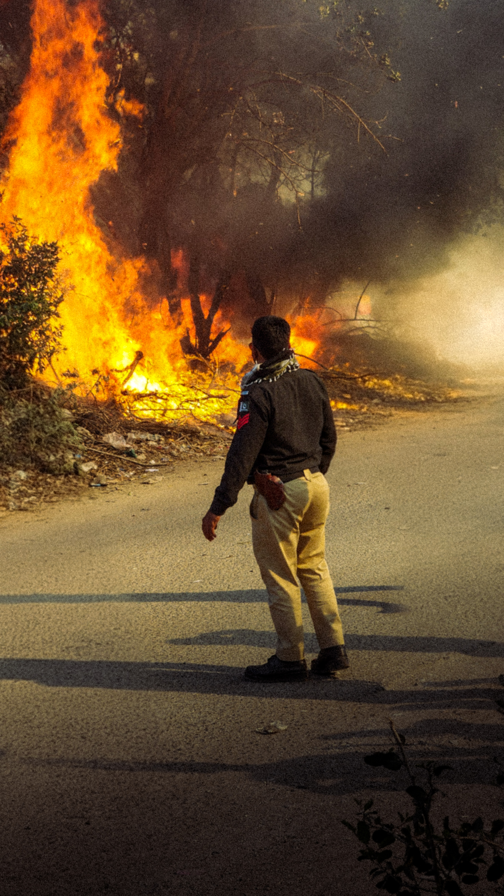

The Most personal is The Most Creative
My name is Mueed Shah and i'm a photographer, I see the world in frames, find stories in ordinary moments, and believe that the right shot can say what words never could. I'm drawn to photography, videography, and films that leave you thinking long after the credits roll. For me, creativity isn't just about making things look good; it's about making people feel something. The details, the lighting, the music, the atmosphere everything tells a story.
Below Are Some of My Favourite Shots That I Have Clicked




I'm drawn to films that make me feel something the kind that stay with you long after the credits roll. The storytelling, the cinematography, the soundtracks, the little details you notice on the second watch. I love films that make you see the world a little differently. Some movies entertain you. Others become a part of you. And those are my kind of films.
My Top 4 Films